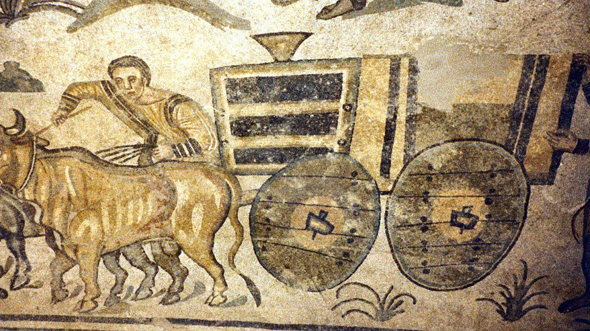
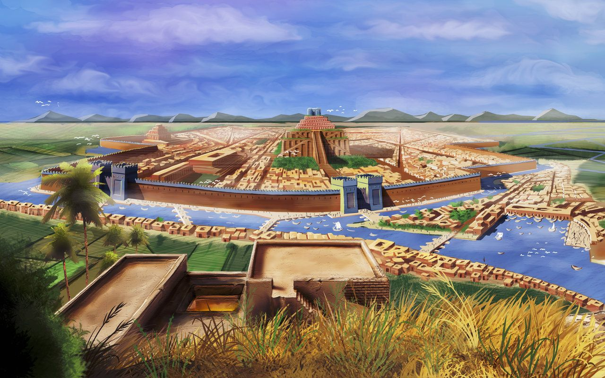

July 8, 2020
Antes de entrar en pleno con la cultura mesopotámica, vamos a hacer un rápido resumen de los aspectos más particulares de la evolución mesopotámica.
Mesopotamia representa en griego entre ríos haciendo un claro contexto a su ubicación comprendida entre los ríos Tigris y Éufrates, que corresponde en la actualidad al territorio de Irak y el noreste de Siria. Gracias a la cantidad de agua en aquella época por los ríos que rodeaban la región, según la Biblia allí estuvo localizado el Paraíso debido a la gran riqueza natural que ofrecía.
Se dividía en Asiria y Babilonia. Dentro de Babilonia encontramos a Acadia y Sumeria. Cada una de las regiones evolucionó de forma diferente, para finalmente ser invadidos y posteriormente dominados por los Persas. La cultura de Mesopotamia fue una de las pioneras en muchas ramas del conocimiento desarrollando la escritura, las primeras leyes en el campo del derecho, el calendario de 12 meses y 360 días, la rueda, la moneda, el sistema postal.
LA ESCRITURA CUNEIFORME
La creación de la escritura se atribuye a los sumerios sobre el año 3.100 a.C siendo el origen de la escritura tipo pictográfica, pasando a continuación al ideograma debido a la dificultad a la hora de dibujar los conocimientos que querían representar. El ideograma hacía más sencilla la interpretación de los dibujos.
Con el tiemplo los ideogramas dieron paso a los signos con formas de cuñas o clavos que personificaban sonidos. Este proceso de reducción se debió a que Mesopotamia no era una tierra rica en terreno rocoso, por lo que había escasez de piedras, pero sí que era rica en arcilla, que posteriormente dio origen al ladrillo. La escritura cuneiforme se realizaba sobre arcilla, cuando todavía estaba húmeda para el subsiguientemente dejarla secar y cocerla con otros ladrillos formando escrituras más amplias.
EL CALENDARIO
El calendario mesopotámico fue uno de los primeros calendarios de la humanidad. Los astrónomos sumerios fueron los primeros en reglamentar el calendario arcaico.
Los meses fueron divididos en cuatro semanas de siete días cada uno, de acuerdo con las fases de la luna, quedando los últimos dos días de cada mes fuera, de ahí el calendario de 12 meses y 360 días.
Los días de la semana recibieron el nombre de la Luna, el Sol y los cinco planetas que hasta el momento era conocidos por los sumerios: Marte, Mercurio, Júpiter, Venus y Saturno. Estos nombres han evolucionado en las diferentes lenguas de forma bastante parecida.
lA MONEDA
Antes de la aparición de la moneda, el canje era el sistema utilizado por las personas para cambiar productos de mano a mano, en lo que uno transfería lo que no necesitaba por otra cosa que si le hiciera falta.
El trueque se mantuvo durante mucho tiempo pero el crecimiento de la actividad comercial demostró que este sistema no era práctico y de ahí el nacimiento de la moneda.
En la civilización mesopotámica comenzaron a utilizar como bienes intermedios para los intercambios barras de oro, plata, cobre, hierro y bronce, pero las dos primeras tenían ventajas sobre el resto debido a su escasez lo que las convertía en más valiosas.
Poco a poco empezaron a aparecer las primeras monedas para simplificar la recaudación de los impuestos reemplazando el ganado, trigo por las monedas.
lA RUEDA

La rueda es una pieza mecánica de forma circular y que gira alrededor de un eje es un componente fundamental en cualquier maquinaria, en vehículos terrestres y en la alfarería, a pesar de que los Incas y los Aztecas se apañaron bastante bien sin ellas.
La primera evidencia de la rueda se encontró en un pictograma de sumeria, datado en el año 3500 antes de Cristo.
Uno de los primeros usos que se le dio a la rueda fue en la fabricación de carros para tirados por bueyes, para transportar mercancías o personas además de los tornos para realizar objetos cerámicos con una mayor rapidez y precisión.
EL ARADO

Dada la cantidad de agua en Mesopotamia, la agricultura era de unos trabajos más habituales.
Para tratar de facilitar la tarea de trastornar el suelo antes de sembrar las semillas, los pueblos de Mesopotamia y la civilización mesopotámica inventaron y perfeccionaron el arado, considerado una evolución del pico y la azada, que era tirado por personas al principio pero que posteriormente fueron los animales como los bueyes o mulas, los encargados de tirar del arado.
Los arados estaban fabricados completamente de madera de una sola pieza con una forma muy similar a la actual, pero hasta la llegada de los romanos, los arados no incluyeron las cuchillas de hierro para poder ahondar más profundo en la tierra.
LA METALURGIA

Si bien es cierto que la metalurgia nació hace miles de años, fue en el Mesopotamia donde se comenzó a utilizarse de forma más habitual el cobre y el estaño para fabricar bronce.
Tanto el cobre como el estaño convivieron en Mesopotamia hasta que el finalmente el bronce termino por imponerse.
En Mesopotamia podías encontrar tres profesiones relacionadas con la metalurgia: el qurqurru era el encargado de obtener el metal desde el mineral.
El nappahu o fundidor, encargado de fabricar las piezas de metal con el material obtenido del mineral. Y finalmente encontramos la figura del kutimmu encargado de confeccionar fabricar piezas con metales preciosos.
SISTEMA SEXAGESIMAL

El sistema sexagesimal es el sistema de numeración posicional que utiliza como base aritmética el número 60 que facilita el cálculo con fracciones. El número 60 tiene la ventaja de tener muchos divisores: (1, 2, 3, 4, 5, 6, 10, 12, 15, 20, 30 y 60). El sistema sexagesimal se utiliza para medir tiempos y ángulos.
PRIMER CODIGO DE LEYES

Hammurabi fue el sexto rey de Babilonia y es conocido principalmente por la promulgación de un nuevo código de leyes: el código de Hammurabi que se convirtió en una de las primeras leyes escritas de la Historia.
El código de Hammurabi contiene 282 leyes escritas en doce tablas escritas en acadio para que cualquier persona alfabetizada pudiera leerla.
Estas leyes ofrecían un castigo por cada transgresión de la ley, castigos por cierto mucho más duros como la pena de muerte, el ojo por ojo, la desfiguración.
Pero a diferencia de los duros castigos, fue el primer código de leyes que daba la oportunidad al rey de aportar pruebas para demostrar si era inocente de lo que se le acusaba.
Inocente o culpable, no había término medio.
Otras culturas mesopotámicas crearon sus propios códigos de leyes como el de UrNammu, Esnunna, Lipit-Istar o el de Hitita
ARQUITECTURA
Como he comentado más arriba, la falta de terreno rocoso, la piedra fuera un bien escaso, lo que obligó a hacer uso del barro, fabricando ladrillos, para poder construir gruesos muros sin apenas aperturas convirtiéndose en edificaciones resistentes.
La madera también era un bien escaso en la región, por lo que tampoco se utilizaba para realizar construcciones.
La facilidad con la que se podían utilizar los ladrillos en las construcciones facilitó el uso de este producto en la fabricación de templos, palacios, murallas y tumbas.
El elemento más característico de los tempos de Mesopotamia es el Zigurat, torre cuadrada de varios pisos escalonados en cuya cima se encuentra un santuario.
Cada esquina de la torre está orientada a los cuatro puntos cardinales y se accede a los diferentes pisos a través de rampas o bien por unas escaleras situadas en los laterales.
Para realizar estas construcciones se utilizan materiales como el mármol, alabastro, el oro y el cedro.
IRRIGACIÓN

Al estar rodeados por dos ríos, la agricultura en Mesopotamia era una de las principales maneras de abastecerse.
Mas arriba ya hemos comentado que uno de los aportes de la cultura mesopotámica actual fue el arado para ayudar al trabajo en el campo.
Pero además del arado, otro importante avance de esta cultura fue la Irrigación, más conocido como riego, que consiste en aportar el agua necesaria para que el cultivo tenga un suministro adecuado y controlado de agua que favorezca su crecimiento.
Para ello se construían pequeños canales para poder llevar el agua desde el río hasta las plantaciones.
ASTROLOGÍA Y ASTRONOMÍA